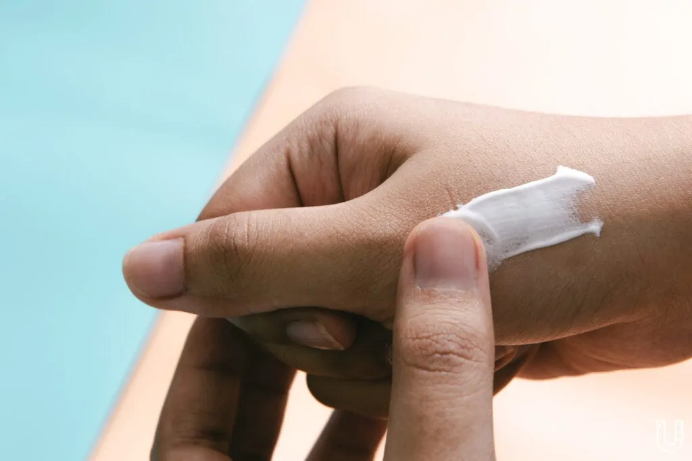

ภาพหาดทรายสีขาวนวลทอดยาวตลอดแนวชายหาด เหล่าเกลียวคลื่นที่ม้วนตัวซัดเข้าฝั่งเป็นระยะ หรือผืนน้ำสีฟ้าครามที่เปล่งแสงระยิบระยับ พร้อมกับสายลมอ่อนๆ ที่พัดเส้นผมให้ปลิวไสว ตามด้วยไออุ่นจากแสงแดด ล้วนชวนให้หลงเสน่ห์ของทะเล จนอยากฉุดร่างกายให้ลุกขึ้นไปเติมความสดชื่นอย่างเต็มที่
เชื่อว่าความงามเหนือผิวน้ำที่เรามองเห็น คงเทียบไม่ได้กับการเห็นหมู่มวลปลาเล็ก-ใหญ่ และสีสันอันสดใสของปะการังที่ขึ้นเรียงรายตามโขดหินในโลกใต้ท้องทะเลอย่างใกล้ชิด แต่ความจริงแล้ว สีสันเหล่านั้นถูกกลืนหายจนกลายเป็น ‘สีขาว’ ไม่ว่าจะเป็นภาวะโลกร้อน ความเค็มของน้ำทะเล ตะกอนจากน้ำจืด ซึ่งส่วนหนึ่งเกิดจาก ‘ครีมกันแดด’ บนร่างกายมนุษย์
#Saveปะการัง ด้วยพลังของเพื่อนซี้
ในวันที่การบีบครีมกันแดดเพียง 1 ข้อนิ้ว สะเทือนถึงโลกใต้ท้องทะเล เพราะมีส่วนทำให้เกิดปะการังฟอกขาว สามเพื่อนซี้ที่รักการดำน้ำเป็นชีวิตจิตใจ จึงผุดไอเดียแบรนด์ ‘KAANI (คานิ)’ ครีมกันแดดรักษ์ปะการัง หรือที่เรียกว่า ‘Reef-safe’ คือ ไม่มีส่วนผสมที่เป็นอันตรายต่อแนวปะการัง ด้วยความตั้งใจเป็นส่วนหนึ่งที่ช่วยดูแลท้องทะเล
จีน-พชร สนิทวงศ์ ณ อยุธยา, แปม-ชนิภา สารสิน และ สตางค์-ดิษย์ลดา ดิษยนันทน์
“ตัวผมดำน้ำมาตั้งแต่ยังเล็กที่หินแดงหินม่วงในจังหวัดภูเก็ต ตอนนั้นผมเห็นสีแดงและสีม่วงบนปะการังละลานตาเต็มไปหมด แต่เมื่อเจ็ดปีที่แล้ว ผมกลับไปดำน้ำอีกครั้ง ผมเห็นแค่โขดหินเท่านั้นเอง”
จีน-พชร สนิทวงศ์ ณ อยุธยา หนึ่งในผู้ก่อตั้งแบรนด์ KAANI (คานิ) เล่าถึงความทรงจำวัยเด็กที่เขาได้ชื่นชมความสวยงามของปะการังที่ปัจจุบันคล้ายกับตุ๊กตาปูนปลาสเตอร์สีขาวโพลน ซึ่งก่อนหน้านั้นตัวเขาเองใช้ครีมกันแดดสูตร Reef-safe จากต่างประเทศ แต่กลับพบว่าไม่ตอบโจทย์ ด้วยสภาพอากาศที่ไม่เหมือนกัน เพราะเมืองไทยมีอุณหภูมิสูงกว่า และความชื้นมากกว่า ทำให้ครีมกันแดดขาววอก และเหนอะมากเป็นพิเศษ
จีน-พชร สนิทวงศ์ ณ อยุธยา
ประกอบกับเพื่อนซี้อีกสองคนอย่าง แปม-ชนิภา สารสิน และ สตางค์-ดิษย์ลดา ดิษยนันทน์ ผู้หลงใหลการดำน้ำเห็นผลกระทบจากกิจกรรมของคนต่อปะการัง รวมไปถึงอาการ ‘ผิวแพ้ง่าย’ จากสารเคมีต่างๆ ที่ผสมในครีมกันแดด ไม่ว่าจะเป็นซิลิโคน พาราเบน แอลกอฮอล์ หรือน้ำหอม ทำให้พวกเธอพยายามเฟ้นหา ‘ผลิตภัณฑ์ที่ใช่’ ซึ่งผลลัพธ์คือ ‘ไม่มี’
“เราทั้งสามคนอยู่นิ่งๆ ไม่ค่อยเป็น (หัวเราะ) ไลฟ์สไตล์ของเราต้องออกไปเผชิญแดด และมลภาวะตลอดเวลา ซึ่งการดำน้ำเป็นหนึ่งในกิจกรรมที่เจอแดดเยอะเป็นพิเศษ แล้วตอนนั้นเรามารู้ว่าครีมกันแดดบางชนิดมันไม่ดีต่อปะการัง พวกเราพยายามเลี่ยงและหันไปใช้น้ำมันมะพร้าวแทน แต่เวลาไปทริปก็ยังเจอคนใช้ครีมกันแดดอยู่ มันเลยเป็นคำถามว่าพอมีทางเลือกครีมกันแดดที่เป็นมิตรต่อปะการังไหม” แปมตอบ
แปม-ชนิภา สารสิน
ระดมความคิดผลิตครีมกันแดดรัก (ษ์) ปะการัง
กว่าจะออกมาเป็นผลิตภัณฑ์ครีมกันแดด KAANI ทั้งสามคนใช้เวลาศึกษาเป็นปี เพื่อค้นคว้าข้อมูล ทำความเข้าใจเรื่องสิ่งแวดล้อม และให้ความสำคัญกับวงจรชีวิตของโปรดักต์ 1 ชิ้นอย่างยั่งยืน
“การที่เราจะทำโปรดักต์ขึ้นมาหนึ่งชิ้น มันหมายถึงเราเปลี่ยนทรัพยากรธรรมชาติมาเป็น ‘อะไรบางอย่าง’ ที่เราใช้ได้ ดังนั้น มันต้องแตกต่างจากสินค้าในท้องตลาด และที่สำคัญ มันต้องแก้ปัญหาในสิ่งที่เรากำลังเผชิญอยู่ได้” แปมตอบ
“ดีต่อธรรมชาติ ดีต่อผิวเรา และดีต่อการใช้งาน”
คือคอนเซปต์หลักของแบรนด์ที่อยากส่งต่อให้ผู้บริโภค ฟังดูอาจเห็นภาพไม่ชัด อย่างแรก KAANI เป็นครีมกันแดดแบบ Physical Sunscreen ซึ่งเป็นเหมือนฟิล์มบางๆ เคลือบผิวคอยสะท้อนแดดออกไป เพื่อไม่ให้รังสี UV ทำร้ายผิวโดยครีมกันแดดไม่ต้องซึมเข้าผิวหนัง ทำให้ไม่มีสารเคมีตกค้างในร่างกาย เนื่องจากประกอบไปด้วยสาร Zinc Oxide กับ Titanium Dioxide ขนาด Non-Nano ที่เป็นโมเลกุลใหญ่ที่จะไม่ทิ้งปนเปื้อนปะการัง และไม่มีสารต้องห้ามทั้งสิบชนิด เข้าข่าย Reef-safe ที่เข้มงวดมากที่สุด
โดย KAANI ยึดกฎหมายของประเทศปาเลา แหล่งดำน้ำที่ดีที่สุดในโลก ซึ่งประกาศแบนสารต้องห้ามที่มีส่วนผสมอันตรายต่อสัตว์ทะเลและปะการัง ได้แก่ Oxybenzone (Benzophenone-3), Ethylparaben, Octinoxate (Octyl Methoxycinnamate), Butylparaben, Octocrylene, 4-Methylbenzylidene Camphor, Benzyl Paraben, Triclosan, Methylparaben และ Phenoxyethanol

“แม้ว่า Reef-safe ยังไม่มีการประกาศใช้ในมาตรฐานเดียวกัน บางแห่งอาจไม่มี Oxybenzone และ Octinoxate ก็ใช้คำว่า Reef-safe บนผลิตภัณฑ์ได้แล้ว แต่แบรนด์ KAANI เลือกใช้มาตรฐานของปาเลา เพราะเป็นประเทศที่เข้มงวดมากที่สุด นอกจากนี้ ยังเป็น Vegan และ Cruelty-free คือไม่ทดลองใช้กับสัตว์ และไม่มีส่วนผสมที่มาจากสัตว์เลย” แปมเสริม
ขณะที่ครีมกันแดดส่วนใหญ่ในตลาดเป็นแบบ Chemical Sunscreen โดยวิธีการทำงาน คือ เมื่อเนื้อครีมซึมเข้าไปอยู่ในผิว มันจะเปลี่ยนรังสี UV ให้เป็นความร้อน ซึ่งเราอาจคุ้นเคยกับประโยคที่บอกว่า “ทาครีมกันแดดก่อน 10 – 15 นาที” เพื่อรอให้ครีมซึมเข้าไปในผิวหนัง แต่ข้อเสียคือ เราต้องทาซ้ำบ่อยทำให้มีโอกาสตกค้างในร่างกาย เนื่องจากครีมกันแดดแบบเคมีต้องทำปฏิกิริยากับแดดตลอดเวลา
คิดทุกขั้นตอนใน 1 วงจรของครีมกันแดด
เมื่อเราลงลึกถึงเรื่องผลิตภัณฑ์ ทั้งสามคนบอกกับเราว่า ผลิตภัณฑ์ครีมกันแดดจะถูกบรรจุอยู่ใน ‘หลอดพลาสติก’ เพราะใช้งานง่าย และไม่ต้องการเปลี่ยนพฤติกรรมของผู้บริโภคในทันที แน่นอนว่าเมื่อพวกเขาเป็นผู้ผลิต ก็ต้องรับผิดชอบกับพลาสติกที่เกิดขึ้น ทำให้แคมเปญ ‘การรับคืนหลอด’ ถูกตั้งขึ้นมาควบคู่กันไปด้วย
ไม่ต้องลงไปปลูกปะการังก็ดูแลสิ่งแวดล้อมได้
แม้ว่าปะการังจะสามารถรอเวลาฟื้นฟูตามธรรมชาติ หรือการลงไปปลูกเพื่อเพิ่มจำนวนปะการังใต้ท้องทะเล แต่ไม่ใช่ทุกคนที่จะทำแบบนั้นได้ ทั้งสามคนจึงไม่อยากให้มองว่าการฟื้นฟูธรรมชาติ หรือดูแลธรรมชาติเป็นเรื่อง ‘ไกลตัว’ เพราะทุกอากัปกิริยาของมนุษย์ ช่วยดูแลสิ่งแวดล้อมควบคู่ไปกับชีวิตประจำวันได้
“ทุกคนไม่จำเป็นต้องลงไปดำน้ำปลูกปะการัง หรือแบกเป้เข้าไปปลูกป่า เพราะการที่เราไม่ทำร้ายสิ่งแวดล้อมก็เท่ากับว่าเราดูแลสิ่งแวดล้อมไปด้วยแล้ว จีนต้องการย้ำว่าแม้จะเป็นเรื่องเล็กๆ แต่ถ้าทุกคนทำมันก็สร้างความแตกต่างได้เยอะ” จีนตอบ
“ต้องขอบคุณแพลตฟอร์มดิจิทัลต่างๆ ที่ทำให้คนตระหนักเรื่องสิ่งแวดล้อมมากขึ้น รับรู้ข้อมูลข่าวสาร และเข้าถึงได้ แต่การลงมือทำต้องอาศัยเวลาจริงๆ เพราะพฤติกรรมคนจะเปลี่ยนทันทีเลยไม่ได้ อย่างเราในฐานะผู้ประกอบการ มันคือการคิดวงจรของผลิตภัณฑ์หนึ่งชิ้น และทำอย่างไรให้ง่ายต่อการเปลี่ยนพฤติกรรมของผู้บริโภค” สตางค์เสริม
“จะมีคนสงสัยว่า Reef-safe มันช่วยสิ่งแวดล้อมได้จริงๆ หรือเปล่า เพราะเวลาทดลองในแล็บกับน้ำทะเลมันจะเหมือนกันจริงเหรอ แต่แปมมองว่าถ้าสารชนิดไหนมีโอกาสเป็นอันตรายต่อสิ่งแวดล้อม เราจะไม่เสี่ยง เพราะสิ่งแวดล้อมเป็นเรื่องที่เรารอไม่ได้ ถ้าเรารองานวิจัยในอีกสิบถึงยี่สิบปีข้างหน้าว่ามันกระทบมากจริงๆ ตอนนั้นเราอาจจะแก้อะไรไม่ได้แล้ว”